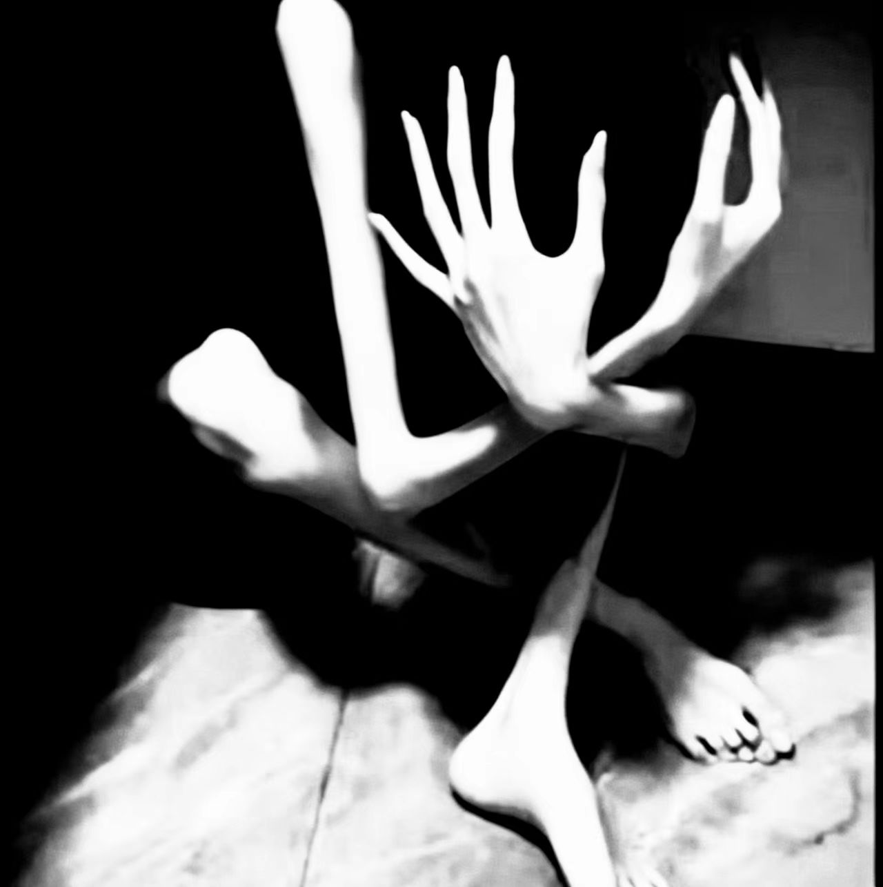

隅影
本档案含高强度认知危害信息。对象依凝视与黑暗放大辐射；黑暗环境会成倍放大其污染强度。禁止对对象说出指定歧义语，禁止裸眼直视。完整面容从未被任何观测手段记录。建议在完成认知评估后查阅。
一特殊处理规程
- HGEF-ARC-042 受控存放于观测站点-09 标准隔离隔间。隔间保留无遮挡墙角，禁止堆放大型遮挡杂物。隔间恒定维持中等亮度照明，严禁完全熄灯——黑暗环境会成倍放大对象认知危害辐射强度。
- 所有观测工作禁止人员裸眼直视实体。观测仅可通过抗模因滤镜红外系统执行。观察窗遮光板常态闭合，无 3 级司铎书面授权严禁开启。
- 全域禁止对 HGEF-ARC-042 说出「瘦一点就更美了」及同义语句，该行为将触发对象应激异常，大幅提升污染输出。
- 所有接触本项目人员、执行观测任务的燃料，上岗前必须经由圣抚部心理筛查。存在躯体变形障碍、身材焦虑史者永久禁止接触本对象。
- HGEF-ARC-042 无法被物理销毁。严禁枪击、切割、焚烧、爆破等破坏性实验。一切销毁尝试永久立项封禁。
- 本对象所有监控录像自动分级归档，高危畸变画面标记【数据删除】，仅 4 级主教及以上权限可调取。
二描述
HGEF-ARC-042 代号隅影，为模因具象化类人异常实体。实体躯体极度枯瘦惨白，全身骨骼轮廓完全裸露，肢体结构违背常态生物力学，四肢可任意角度弯折、缠绕、扭曲。实体生有多根细长异形手掌，指甲灰白枯脆；对象终生蜷缩于各类墙角区域，以所有手掌死死遮盖面部，完整面容从未被任何观测手段记录。
对象常态保持绝对静止、无声无息。当智慧生物持续目视观测本体超过 30 秒，对象肢体将自主缓慢形变，同步向外持续性释放高强度认知危害模因辐射。受辐射侵染个体将产生不可逆强迫性执念：极端否定自我体态、病态追求绝对消瘦、持续自我审视缺陷。重度侵染者会出现绝食、自残、躯体认知错乱等症状。
实体具备极强物理自愈性：所有物理损伤可在 8–12 分钟内完全重组复原。伤害力度越大，模因污染溢出越强。综合访谈与实验记录判定：隅影并非生物实体，而是当代人类病态审美焦虑凝聚成型的辉光裂隙具象体。
三事件记录
事件-042-1：原址回收事件
20██年██月██日，圣录部监测到网络异常畸变影像流传。圣行部外勤抵达民间原址，住户已深度精神侵染，由圣抚部接管善后。现场仅存一张实体静态影像，对象自行蛰伏墙角阴影。外勤人员执行感官封闭规程完成转运，对外覆盖故事定为「居民精神障碍引发居家异常，房屋封闭修缮」。
事件-042-2：遮光板违规开启侵染事故
事故发生于站点-09 观测岗。当班司铎因长期轮班精神疲劳，在无授权状态下手动升起遮光板，导致值守燃料-F214 与该司铎本人共计 47 秒裸眼无防护暴露。暴露 30 秒后，HGEF-ARC-042 缠绕肢体缓慢转动，多只遮面手掌朝向观测窗无声伸展，关节呈现完全违背物理结构的弯折形态。
现场症状：燃料-F214 当场出现重度体态妄想，反复自我贬低、抠抓肢体皮肤；当班司铎出现眩晕、幻视、消瘦人形虚影重叠视觉。安保即时闭合遮光板终止暴露。
后续处置：
- 燃料-F214 在隔离监护期间持续极端绝食，72 小时内出现不可逆重度躯体变形障碍，判定永久侵染，按燃料最高风险处置条例永久封存监护，不再参与任何异常作业；
- 涉事司铎经圣抚部干预康复，永久调离本项目，遗留墙角空间恐惧症后遗症；
- 监控在遮光板闭合瞬间捕捉到对象指缝间畸变面容碎片，画面完全失真、无法识别，片段已【数据删除】。
四附录 A · 访谈记录 INT-042-01
访谈形式：无目视接触，低频震动传感转译文本 · 访谈人：三级司铎 陆昭
司铎陆昭：你可接收音频讯号。
（隔间内出现细碎骨骼摩擦震动，对象轻微蠕动。）
司铎陆昭：你永久遮蔽面容的原因。
（长时间静默）
对象转译文本：面容不可示人。观者必成我。
司铎陆昭：你所造成的精神损伤，是否为主动加害。
（红外监测显示对象收紧躯体、按压头部）
对象转译文本：我为镜。世人执念自存，我唯映照裂隙。
司铎陆昭：你的起源是否为人类。
（静默 1 分 22 秒）
对象转译文本：我是万千执念堆砌之影。无生，无死。人间病态审美不绝，我便永存。
司铎陆昭：永久隔离能否让你消散。
（低频叹息震动）
对象转译文本：囚身可止形，囚心不可止。人间隅角，无处不在。
五附录 B · 销毁可行性实验记录
| 项目 | 内容 |
|---|---|
| 执行部门 | 圣鉴部 |
| 实验对象 | HGEF-ARC-042 |
| 实验方式 | 隔间高温灼烧销毁测试 |
| 实验参与 | 三名值守燃料 |
| 实验结果 | 实体肢体完全碳化崩解，残余阴影组织于墙角自发扭曲重组，21 分钟完全复原。实验全程大规模模因溢出，三名燃料全部出现中度认知侵染。 |
| 最终结论 | 销毁完全无效，且会加剧常态污染，永久禁止一切销毁实验。 |
六附录 C · 收容偏移应急规程
- 若 HGEF-ARC-042 脱离隔间、蛰伏建筑墙角，全员立刻撤离、闭眼封耳、执行感官封闭。封闭全域出入口与光源。
- 外勤执事佩戴全封闭抗模因头盔，仅红外成像定位，严禁目视。禁止杀伤武器。
- 高频爆闪强光压制实体活性，使用碳纤维无金属网整体包裹。严禁捆绑单肢——单肢束缚会触发全域模因爆发。
- 平稳转运归位，封锁区域 72 小时，所有接触人员、燃料全员强制心理复筛。
最高圣律禁令：严禁触碰、拨开对象遮面手掌，违者将承受不可逆顶级认知灾变。
七附录 D · 侵染人员 / 燃料善后条例
- 彻底切断所有侵染者与本对象的影像、音频、档案、观测权限。
- 送入圣抚部抗模因病区强制干预。
- 72 小时症状未消退、出现自毁倾向，判定不可逆侵染：
- 燃料人员：永久封存隔离，终止一切外勤与实验职能；
- 在职会众 / 圣职：调离全部异常岗位，终身定期心理复检；
- 平民目击者：执行记忆钝化干预，落地公共覆盖故事，完成常态修复。
八附录 E · 影像档案（观测记录）
以下为观测站点-09 抗模因滤镜红外系统捕获的影像记录，并非现场照片。鉴于对象认知危害特性，影像仅限 4 级主教及以上权限调取，严禁外传、复制或默诵细节；高危畸变部分已按规程标记【数据删除】。对象完整面容从未被记录，本帧为最接近「遮面」形态的保留记录之一。

九附注
- 核心信息缺口：对象真实面容、具体诞生时间、最初触发凝聚事件未知；现有影像均以遮面或畸变形态呈现，无法还原面容。
- 档案更新记录：事故-042-2 后全面升级观测权限、燃料筛查标准、遮光板锁死机制。
- 圣鉴部最终批注：隅影非灾，人心为隙。它只是人类辉光上，一道自我撕裂的永恒裂痕。
HGEF 信条核验：人类辉光永存。